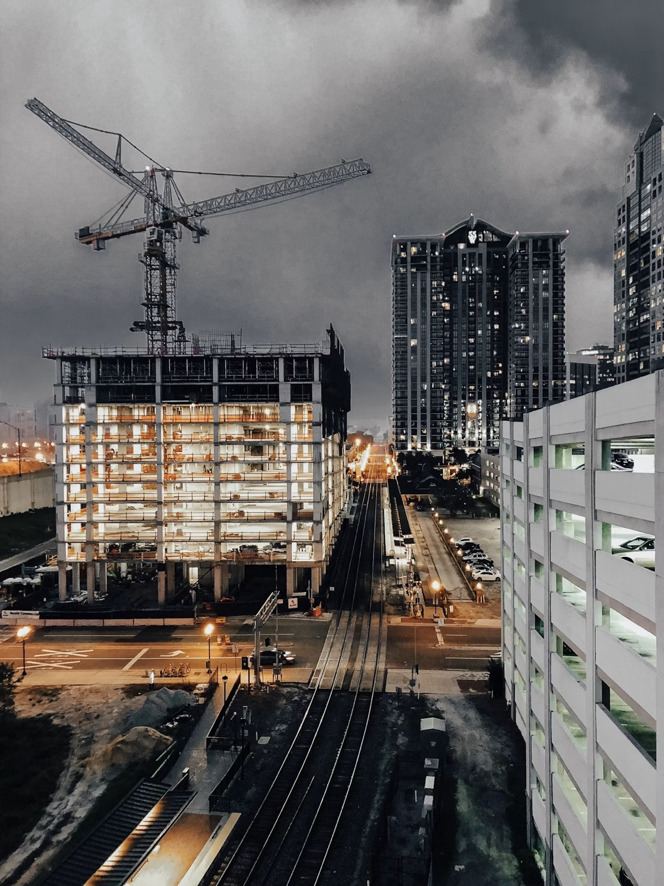
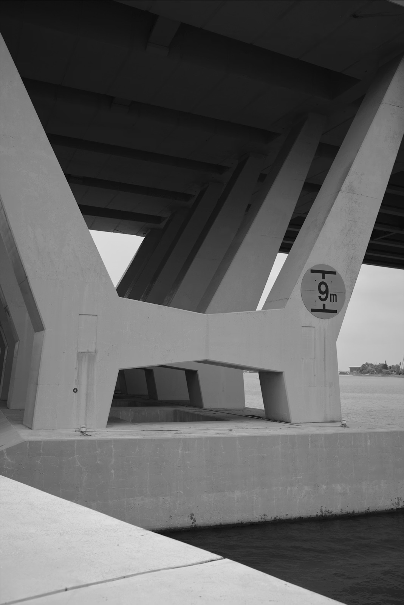
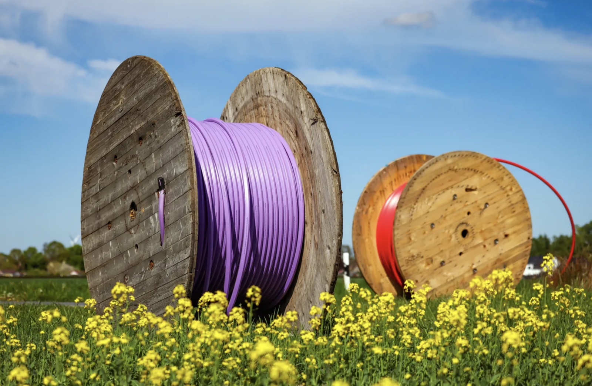

DINU POPUSOI
Qualität. Zuverlässigkeit. Vertrauen.
Gebäudereinigung, Baustellenreinigung, Brückensanierung und Tiefbau-/Glasfaserarbeiten aus Krefeld – für Büros, Gewerbeobjekte und Infrastrukturprojekte.
Jetzt Anfrage stellenUnsere Leistungen
Unterhaltsreinigung, Grundreinigung, Baugrob- und Bauendreinigung sowie Zwischenreinigung für Büros, Treppenhäuser und Gewerbeobjekte. Dazu Fenster- und Glasreinigung, Fassadenreinigung sowie Industrie-, Maschinen- und Hallenreinigung – auch nach Renovierung und Sanierung.

Instandsetzung und Sanierung von Brückenbauwerken – von der Betoninstandsetzung bis zur Pflege der Infrastruktur. Wir sorgen dafür, dass Bauwerke langfristig sicher und funktionstüchtig bleiben.

Verlegung von Glasfaserkabeln und Tiefbauarbeiten für eine zuverlässige Infrastruktur – von der Kabelverlegung bis zum fertigen Erdbau.

Über uns
Unter der Leitung von Dinu Popusoi steht DP Bau für saubere Arbeit im wörtlichen wie übertragenen Sinn: zuverlässige Gebäude- und Baustellenreinigung, fachgerechte Brückeninstandsetzung und professionelle Tiefbau- und Glasfaserarbeiten. Mit Sitz in Krefeld sind wir in der Region und darüber hinaus für Sie im Einsatz.
Kontakt
Sie haben ein Projekt oder eine Anfrage? Schreiben Sie uns oder rufen Sie an – wir melden uns zeitnah zurück.